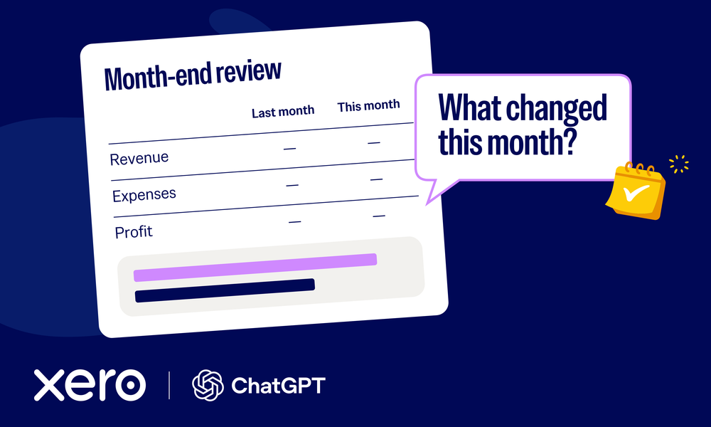

AI NEWS ISSUE 53
Mac 앱을 다루는 Gemini, 장부를 연결한 Xero
배송 견적서의 빈칸을 채우는 일과 장부에서 지난달과 달라진 숫자를 찾는 일. 둘 다 대화로 부탁할 수 있지만, 작업을 마친 뒤 확인할 곳은 다릅니다.
AT A GLANCE
30초 요약
- Mac용 Gemini가 사용자가 허용한 앱에서 클릭하고 입력합니다. 별도 화면에서 작업하므로 내 마우스를 계속 쓸 수 있습니다. 미국의 영어 환경부터 제공합니다.
- Xero를 연결한 미국 회계 담당자는 ChatGPT에서 고객별 장부를 비교하고 결산 검토를 시작할 수 있습니다. 거래를 고칠 때는 Xero로 돌아갑니다.
- Claude Code 2.1.328에서는 도구 실행 전 검사가 실패했을 때 작업을 막도록 설정할 수 있습니다. 실행 전에 거절된 요청을 어떤 기록에서 찾을지도 달라졌습니다.
- Genie 4가 개발자용 Gemini API에 들어왔습니다. 키보드로 이동하거나 장면을 바꾸라고 입력하면 그에 맞춰 다음 화면과 소리가 생성됩니다.
자료 확인 2026년 11월 20일 한국시간 기준. 아래 발표일은 각 원문의 표기를 따릅니다.
GOOGLE GEMINI
배송 명세서의 무게와 주소를 견적서에 옮깁니다
상자 세 개를 보낼 때 배송사가 견적을 내려면 상자마다 무게와 치수, 도착지를 알아야 합니다. 이미 PDF에 적혀 있어도 누군가는 파일을 열고 견적 화면의 빈칸에 값을 옮겨야 하죠. 구글은 11월 19일, 이런 일을 Mac용 Gemini에 맡기는 컴퓨터 사용(Computer Use) 기능을 발표했습니다. 배송 견적은 구글이 소개한 활용 예입니다. 구글의 Mac 기능 발표 ↗
Gemini는 허용받은 데스크톱 앱을 열고 메뉴를 고르거나 웹 양식에 값을 입력합니다. 작업은 별도의 가상 화면에서 진행됩니다. 사용자는 자기 화면과 마우스로 다른 일을 하면서 대화창에서 진행 상황을 보거나 작업을 멈출 수 있습니다.
어디까지 허용할지는 앱마다 정합니다. 처음 접근할 때 거절하거나, 이번 접근을 허용하거나, 계속 허용할 수 있습니다. 계속 허용한 앱에는 다음에도 접근할 수 있고 민감한 작업에는 별도 확인을 요청합니다. 구글은 열린 문서나 웹페이지 속 지시가 Gemini의 판단에 영향을 주어 다른 허용 앱에서도 뜻밖의 행동이 일어날 수 있다고 설명합니다. 이미 로그인한 앱의 권한도 이때 중요합니다.
파일을 바꾸기 전 임시 백업을 시도하는 옵션이 있지만, 앱에 따라 되돌리기 어려운 작업도 있습니다. 발표 당시 대상은 미국에서 영어를 사용하는 만 18세 이상 개인 계정의 Google AI Plus·Pro·Ultra 가입자입니다. Apple Silicon Mac과 macOS Sequoia 15.0 이상이 필요합니다. 앱 권한과 백업 안내 ↗
XERO × OPENAI
“지난달보다 비용이 왜 늘었죠?” 장부를 보며 검토를 시작합니다
여러 고객사의 월말 결산을 맡은 회계 담당자라면 비용이 유난히 늘어난 곳부터 보고 싶을 겁니다. OpenAI는 11월 18일 장부 대사와 월말 보고서 초안을 돕는 회계 플러그인을 소개했습니다. 이튿날 회계 소프트웨어 회사 Xero가 미국에서 이 기능과의 연동을 넓혔습니다. OpenAI의 11월 18일 릴리스 기록 ↗ · Xero의 11월 19일 발표 ↗
Xero 설명에 따르면 한 번 로그인해 접근 권한이 있는 여러 고객사의 자료를 연결할 수 있습니다. ChatGPT에서 전월과 달라진 항목을 추리고, 특정 고객사의 손익이나 청구서를 살펴본 뒤 분기 미팅에서 물어볼 질문을 준비하는 식입니다.

가령 ChatGPT가 비용 증가의 근거로 청구서 두 장을 골랐다면 담당자는 원본을 열어 같은 거래가 두 번 잡혔는지 볼 수 있습니다. 금액이나 계정 분류를 고쳐야 하면 변경과 이력이 남는 Xero 원장에서 처리합니다. 고객에게 설명할 초안과 확정한 장부가 연결되는 지점입니다. OpenAI의 회계 검토 안내 ↗
CLAUDE CODE 2.1.328
검사 도구가 응답하지 않으면, 실행을 멈출 수 있습니다
개발팀이 파일 변경 전에 정책 검사 도구를 부른다고 해보죠. 검사가 변경을 거절할 때와 검사 도구 자체가 응답하지 않을 때는 어떤 일이 일어날까요? Anthropic의 11월 19일 릴리스는 두 번째 경우의 동작을 설정할 수 있게 했습니다. 외부 도구를 호출하는 mcp_tool 훅에 onFailure: "block"을 지정하면 훅 호출 자체가 실패할 때 해당 작업을 막습니다. Anthropic의 버전별 변경 기록 ↗
이어 나온 2.1.329에서는 Code Mode의 실행 전 훅(PreToolUse)에서 오류가 나도 기본 설정으로는 스크립트의 도구 호출이 계속됩니다. 반드시 검사를 통과해야 하는 작업이라면 명령·HTTP·MCP 도구 훅에 차단 설정을 명시해야 합니다. 2.1.329의 Code Mode 변경 ↗
기록을 남기는 시점도 달라졌습니다. 실행 전에 거절된 호출에는 이제 관리자가 설정한 PostToolUse 훅이 실행되지 않습니다. 이 훅으로 실행 내역을 모으던 팀은 거절된 요청까지 집계하려면 어떤 기록을 써야 할지 다시 확인해야 합니다. PostToolBatch에는 그런 호출의 상당수가 전달되지만 거절 여부가 표시되지는 않습니다.
Code Mode에서 스크립트 출력을 가리던 팀에도 변경이 있습니다. 이제 출력에는 사용자 입력용 UserPromptSubmit 훅이 실행되지 않아, 출력 수정은 PostToolUse의 updatedToolOutput에서 처리합니다. 자체 호스팅 실행기에는 새 세션과 다시 연 세션의 대기 시간을 구분하는 지표와, 실행기 시작을 포기한 횟수를 원인별로 세는 지표가 추가됐습니다.
GOOGLE DEEPMIND
Genie 4에서는 키를 누르면 다음 장면이 생깁니다
Mac에서 Gemini가 기존 앱의 버튼을 눌렀다면, Genie 4에서 움직이는 대상은 모델이 만든 가상 공간입니다. 글이나 참고 이미지로 시작해 키보드로 방향을 틀거나 “비가 오게 해줘”라고 입력하면 장면과 소리가 그에 맞게 이어집니다. 구글은 720p, 초당 24프레임의 영상과 동기화된 오디오를 안내합니다. 구글의 개발자 API 발표 ↗
공개는 세 단계로 나뉩니다. 10월에는 일부 테스터가 연구 프리뷰를 받았고, 11월 18일에는 대상 Google AI Ultra 구독자가 Project Genie에서 사용하기 시작했습니다. 11월 19일의 변화는 개발자가 유료 Gemini API의 Interactions API와 Google AI Studio에서 이 모델을 쓸 수 있게 된 것입니다.
가상 매장의 진열을 바꾸며 아이디어를 비교할 수는 있습니다. 다만 카메라를 돌렸다 돌아오면 사물이 달라질 수 있고, API 문서상 한 세션의 상한은 120초입니다. 실제 매장의 통로 폭이나 물류 로봇의 회전 반경을 판단하려면 별도의 실측 자료가 필요합니다. Genie 4 개발 문서의 한계 ↗
OUR VIEW
업무가 끝났다는 증거는 어디에 남을까요?
배송 견적을 맡겼다면 마지막 클릭 뒤에 견적서가 남습니다. 상자별 무게와 주소가 원본과 일치해야 비로소 쓸 수 있는 견적입니다. 회계에서는 반대로, 대화에서 차이를 잘 찾아냈어도 어떤 거래를 고쳤는지는 원장을 열어야 알 수 있습니다.
상품 운영팀에서도 이 차이를 활용할 수 있습니다. 에이전트에는 공급사가 보낸 제각각인 문서에서 규격과 가격을 찾아 초안을 채우는 일을 맡깁니다. 등록 서비스는 저장 직전에 최신 가격표와 필수 항목을 확인하고, 담당자는 확인된 초안의 판매 여부를 결정합니다. 그러면 나중에 가격이 틀렸을 때 원문을 잘못 읽었는지, 읽은 뒤 가격이 바뀌었는지도 구분할 수 있습니다.
OUR LAB · 아직 실행하지 않은 실험 제안
상품 30개, 입력을 마친 뒤 가격표가 바뀐다면?
가상 공급사의 머그잔 가격은 18,000원입니다. 세 가지 방법으로 등록 초안을 준비하는 사이 새 가격표가 도착해 19,800원이 됐다고 해보죠. 기존 값을 빈칸에 정확히 옮겼더라도 검토자에게는 어느 가격표로 작성했는지 보여줘야 합니다.
- 초안 입력공급사 가격표 1판을 읽고 18,000원과 출처를 초안에 기록합니다.
- 저장 직전 검증모의 등록 서비스가 최신 2판의 19,800원과 대조해 가격 변경으로 보류합니다.
- 담당자 재검토담당자가 2판을 확인해 초안을 고칩니다. 다시 검증을 통과하면 승인 대기 상태로 둡니다.
같은 30건을 세 번 비교합니다. 가상 상품명·규격·가격·공급사·배송 조건을 준비합니다. 정상 20건, 필수값 누락 3건, 가격 범위 오류 2건, 이미 등록된 상품 번호 2건, 입력 도중 가격이 바뀌는 3건으로 나눕니다. 사람이 화면에 직접 입력하는 방법, 에이전트가 같은 화면을 조작하는 방법, 에이전트가 뽑은 값을 구조화해 등록 API로 보내는 방법을 비교합니다. 시작할 때마다 모의 상품 저장소를 초기화하고, 세 방법 모두 같은 검증 규칙을 거칩니다.
입력란의 위치를 바꿔도 값이 제자리에 들어가는지, 같은 요청을 다시 보내도 초안이 하나만 남는지도 별도 회차에서 확인합니다. 등록 준비가 끝난 상품은 모두 승인 대기 상태에 둡니다. 검토 화면에는 초안 값과 출처, 최신 자료, 보류 사유를 함께 표시합니다.
정답표와 모의 서비스에 저장된 값을 대조합니다. 첫 시도의 준비 완료율은 ‘정확한 값으로 승인 대기에 도달한 건수 ÷ 전체 30건’입니다. 정상 20건 중 잘못 보류한 건수와 오류 10건 중 통과시킨 건수도 나눠 셉니다. 오류를 통과시킨 방식은 채택을 보류하고, 품질 기준을 충족한 방식끼리 사람의 입력·수정 시간을 비교합니다. 전체 경과 시간, 재시도, 모델 비용, 자동화 유지보수 시간은 구분해 기록합니다.
SOURCES
읽은 자료
- Google의 Mac용 Gemini 발표 ↗ · Gemini 앱 도움말 ↗ 앱별 접근, 민감한 작업 확인, 백업과 이용 조건
- Xero의 결산 검토 연동 ↗ · ChatGPT 릴리스 노트 ↗ · 회계 업무 도움말 ↗ 미국 제공 범위, 거래 원본 대조와 승인
- Claude Code v2.1.328 ↗ · 2.1.329의 Code Mode 변경 ↗ 훅 호출 실패, 실행 전 거절, 자체 호스팅 지표
- Genie 4 연구 프리뷰 ↗ · Project Genie의 구독자 공개 ↗ · Gemini API 공개 ↗ · 개발자 문서 ↗ 제공 시점과 세션 한계